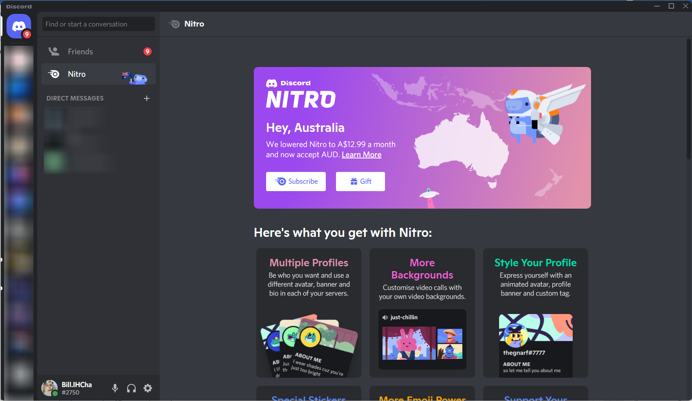

Social Media
Social media is a great tool for communicating with people that you can't meet with in real life very often. Chances are, you've most likely used it yourself. Some examples of social media are Meta (Facebook), Instagram (Meta), Snapchat, YouTube, TikTok.
Social media was originally created as a tool for people to communicate with each other when they can’t meet up in real life, adding to the joy of talking with friends and family. It can also be used to communicate with a teacher or others about stuff. Take YouTube for example, you just saw a funny video and want to share it with someone, social media is something you could use to accomplish that.
YouTube

YouTube’s main purpose is to give people an opportunity to create enjoyable content and earn money, or just watch some videos! These videos can be educational, funny, even sad - of course those are only some genres that are contained without the vast world of YouTube. Some companies use YouTube to create ads to promote themselves, or their products/apps. Other times people just create reviews, gameplay videos and other content like VLOGs for the enjoyment of users and the profit of making videos.
Snapchat & Instagram


Snapchat is a great way of chatting with friends, playing games, taking selfies and more. It has some good features including an easy-to-use interface that allows you to subscribe and follow people, receiving notifications whenever they post something.
It’s very easy to take selfies and photos with Snapchat, coming with a lot of AI edits, filters, effects, and music that is all there, and you could use it whenever you want to improve your posts. Same with Instagram, it has a lot of images editing feature too. But Snapchat is way more kids friendly and Instagram is more for business uses.
Metaverse
You’ve probably heard of the Meta Universe before, maybe from the news or someone posted about it on YouTube. It takes social media into the next level!
Facebook renamed their company to Meta a while ago. Why? Because they are creating something huge called the Metaverse that is basically is a virtual world in VR. People can have the face they want, people can have the ability to teleport, or even work in it.
TikTok
TikTok is a social media platform that has taken the favour of many people around the world. On TikTok, you can make shorts of you singing, or doing something funny for the entertainment of others. When people are bored, a lot of the time they may go to social media, TikTok in this case and scroll through clips to find some joy. The best part of TikTok is that because the videos are short, they're plentiful and even easier to make (most of the time). YouTube later included shorts feature due to the popularity of them in hopes that they may gain more support and users.
Social media is a great tool for a lot of things, BUT it can do a lot of harm to people.
Social media companies have a very similar goals, that goal making money, but you may think the app itself is free, how do they make money? There are a lot of ways for them to make money, the most common way is to show users ads. To make companies want to use your app (the social media) as their promotion tool, you first need to make yourself popular right? When a lot of users use your social media platform, companies will want to promote their products using your social media app because a lot of people will see it, so the social media companies need to innovate some ways to make users use their app a lot.
There are multiple ways for companies to get more users using their apps, the most common way by using you essentially as their ‘worker’, then make more people into their workers using you, it’s like a plague spreading from one user to another. For example: YouTube. You wonder how, isn’t YouTube just a tool for us to learn and have fun? Well, that’s not the whole truth. YouTube wants people to create videos, you may be a content creator yourself and make YouTube videos, it might be YouTube shorts, or some video for teaching. But when you think you’re creating the videos for the community, you’re actually helping YouTube to get more people using their platform. If your videos are good more people may want to watch future uploads, sometimes leading an inspiration for other viewers to start wanting to create their own videos, either having fun or joining the race for the youtuber with the most subscribers. That is part of what encourages peoples’ goals for YouTube.
This is the Same for TikTok, it works just like YouTube but with more videos because they are all shorts. This means they can earn more by ads because you’re constantly scrolling through more clips because they’re so short. Snapchat, Facebook, Instagram all work in similar ways too, but with things called stories and feeds.
Social media not only draws you attention into spending all of your time scrolling through feeds, wasting it, it also contains a chat feature that can cause a lot of problems like cyberbullying, issues communicating in real life because you chat too much digitally.
A lot of suicides are caused by social media through depression, low self-esteem, cyberbullying and other online issues. You might be wondering how can social media can cause depression? There might be multiple reasons: the first one is online bullying. Online bullying happens a lot because people just don’t feel like bullying someone in real life or are just too scared to be seen doing it, so they turn to bullying digitally on social medias.
The second most common reason is due to not achieving the goal they set, in terms of follower count for example, sometimes even likes. Other times things can go wrong and people might laugh at in you in real life because of it.
How do companies make you to use they products (social media)?
When you are scrolling though feeds, or just browsing YouTube, you’ll always see the videos/posts that you like to see, so you just want to watch it/keep scrolling through recommendation that are set in place for you because of something called machine learning.
Not only does social media have a machine learning system to adapt to you and your interests to keep you on longer, social media was designed to be addictive in aspects such as the user interface. A main design feature that keeps people checking is when the app keeps trying to survive in the background avoiding being shut down by the operating system so it can show you any notifications you get. I.e. someone sends you a message or someone you follow posts. When you get a like on your post or a message, other examples included, your brain receives a rush of dopamine that makes you want to stay on longer to feel more of the pleasure your brain has tied to social media.
What can we do?
Social media is just like drugs, when you take it, it’s barely possible to escape. Some people says just delete your social media account or delete the app, or set screen time to help reduce our time on social media. But that doesn’t help at all! My opinion is kind of different than the others. If you just gonna delete the app or set screen time, your brain is still thinking about social your posts, messages and others. So it’s gonna make everything more worse. That means your brain is still thinking about and trying to achieve the dopamine. Not a lot of people have a strong self-control, so to actually reducing social media time it’s not that simple like “delete the app” or “just don’t use it”. Even a lot of adults have a lot of time spent on social media.
So how to actually reduce the time on social media? Well, first you need to know what’s the goal on social media. You probably using social media because of board, can not find anything to do. You may use social media because there are funny things in there that make you laugh. Or you may use social media because of chatting with friends, but ended up scrolling infinitely. As I said in the beginning, social media was supposed to be a tool for making people joy, and a tool for people to communicate if they can’t achieve it in real life, not for the purpose of addiction. But I feel like the companies just going too far for the monies.
• First of all, I think most the company is actually the one make people addicted to their app just for money, I know this probably isn’t a thing that we could change, but it’s a nice thing to know about.
• If your social media goal is for joy, why can’t you find something else for joy that’s is good for you? Like I like piano and programming. This website is hand coded by me, and I enjoy it because when I see the final result of my website I feels very proud of myself for having the ability to coded something amazing and useful. Same with piano, I know it’s probably a pain starting to learn or do something. Like when I wasn’t this good at piano, I worked really hard for it. So now I’m grade 7 at piano, and I could enjoy myself playing it. Even if I just play it as a hobby, I can still feel joy when playing it. You shouldn’t say that you can’t fid anything that could make you happy, there is like millions of things that you can do. How about just trying some new things? After trying a lot of them you should be able to find something that makes you joyful. But make sure don’t give up too easily, after hard & smart work you should receive joy.
• But if you active on social media only because you want to talk to someone, there is really nothing much you can do about it. As I said, social media is a tool for communication, so I guess you use it the right way. But there is a better thing to do instead of chatting online, why not just play in real life? I guess if people don’t really want to you don’t get a choice for this.
Personal Opinions
Social media is not bad if you use it the right way, but self-control is hard. But I do have some opinions & suggestions on this one.
Discord (Not promoting)
Discord is a chat app that’s is way different than the other social media. In my opinion, it’s not actually a social media. And Discord said themselves in Discord Safety Center. Discord isn’t like any other social media with super user-friendly interface, if you want to create Discord servers, you actually need to learn how the permission stuffs works. So that means they achieved the actual purpose of social media and I love it because it’s super developer friendly.
Discord Developers
not only a chat app that let you chat with others, it’s also super developers friendly. If you don’t know how to code, it’s fine. There is a thing called server on Discord. That basically allows you to invite anyone on the internet with links, and you can give them a thing called role for changing they permission. But if you know how to code, Discord is a good option, even if you are starting, it’s a very good option because either if you use JavaScript, Python, C# (.NET), TypeScript, or even some language that’s is not too common to interact with Discord API. I suggest use discord.js because it’s pretty easy to setup and have a lot of packages to use with node.js. There is a thing call bots in Discord, you can basically interact with the Discord API to control how the bot works. And if you’re building a website, you can use Discord built in embed for servers. But make sure you have read Discord developer terms of services (Discord Developer Portal — Documentation — Legal) before making them so you won’t get in trouble. If you want to actually want to work the Discord app, it’s a really good place too. All the developer are very chill even on social media like YouTube, and they have a really nice work space for you. You can work wherever you want in the building (35 Reasons to Work at Discord - YouTube). And it’s pretty simple to apply jobs at Discord too (Jobs and Career Opportunities at Discord).
How does discord earn money?
I really enjoy Discord because the company is not trying to make their app addictive, so there is no feeds, stories, or other things that will addict you. Because of that, Discord doesn’t show you any ads. Their purpose isn’t trying to use you as their workers. But how do they make money then? Discord has a very special way of doing it, and I think it’s pretty smart. The main way for them to earn money is by the thing call nitro, it’s basically a perk that allow you to do more stuff on Discord like screen sharing up to 60fps and source resolution. But not many people need it. There is already a lot of things you can do without nitro. They’re just giving you an option to buy it or not. The other way they money is by partner with other companies like PlayStation, Xbox, Games like Fortnite and others. So they could receive some money from them because they’re basically promoting them. But while promoting Discord give the user more joy of using their app because the app is made for gaming. Nowadays people use it for a lot of things like helping developers, make server for friends so they can talk, but the promoting doesn’t really bother them because they’re not showing in your profile when you’re not playing the game.
Final Though
Social media is a drug that when you addicted to it, it’s really hard to stop using it. But there are some ways to make it a useful tool. If you’re still using apps like Snapchat, Instagram, Facebook, I suggest you that you could think about switching to Discord. Because I call them terrible apps. You could learn how to use Discord, it may take a while when you get use to it, but I think it’s worth to switch. If you’re not using any social media, just stay like it. Don’t try social media just because they’re terrible. If you can’t stop using social media, maybe try more activities in real life! Don’t forget who you are and what’s real what’s not. The real life it’s actually fun if you find the thing you like. So go explorer, you’ll eventually find the thing you like (except using social media or playing games).